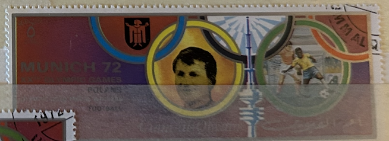
| SOURCE | TITLE| IMAGE MATCH | click to source page |
| Wikimedia.org | File:1972 stamp of Umm al-Quwain Knut Knudsen.jpg - Wikimedia Commons | 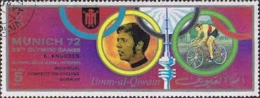 |
| eBay | UMM AL QIWAIN 1972 5r used NG Olympic Games Munich Discus AIRMAIL STAMP ##a3 | eBay | 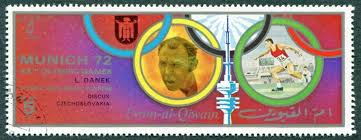 |
| Wikimedia.org | File:1972 stamp of Umm al-Quwain Klaus Wolfermann.jpg - Wikimedia Commons |  |
| Wikimedia.org | File:1972 stamp of Ajman Frank Shorter.jpg - Wikimedia Commons |  |
| Wikimedia.org | File:1972 stamp of Umm al-Quwain Klaus Dibiasi.jpg - Wikimedia Commons | 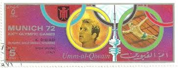 |
| Wikipedia | File:1972 stamp of Ajman Richard Meade.jpg - Wikipedia | 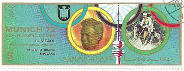 |
| eBay | Ajman Indiana Olympics Postal Stamps for sale | eBay |  |
| Wikimedia.org | File:1972 stamp of Ajman Wolfgang Nordwig.jpg - Wikimedia Commons |  |
| Shutterstock | Olympics Retro: Over 10,946 Royalty-Free Licensable Stock Photos | Shutterstock |  |
| Wikimedia.org | File:1972 stamp of Ajman K Janz.jpg - Wikimedia Commons | 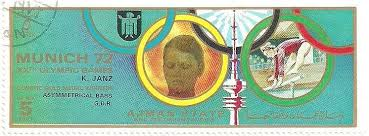 |
| owlsandbooks.co.uk | BOOK STAMPS UMM AL QIWAIN | 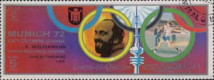 |
| Wikimedia.org | File:1972 stamp of Ajman Nadezhda Chizhova.jpg - Wikimedia Commons |  |
| lastdodo.com | Olympics 5 (1972) - Ajman - LastDodo | 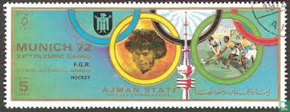 |
| eBay | Olympic High Jump | eBay | 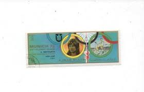 |
| Wikipedia | Shinobu Sekine - Simple English Wikipedia, the free encyclopedia | 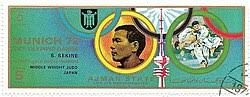 |
| Wikipedia | Equestrian at the 1972 Summer Olympics – Individual jumping - Wikipedia |  |
| Wikimedia.org | File:1972 stamp of Ajman Ludvík Daněk.jpg - Wikimedia Commons | 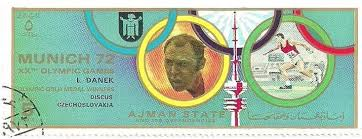 |
| GetArchive | 11 Viktor klimenko Images: PICRYL - Public Domain Media Search Engine Public Domain Search | 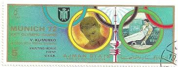 |
| Alamy | Quwain hi-res stock photography and images - Page 8 - Alamy | 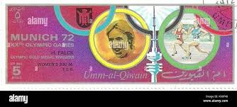 |
| Wikipedia | File:1972 stamp of Ajman Graziano Mancinelli.jpg - Wikipedia |  |
| Alamy | History item hi-res stock photography and images - Alamy |  |
| Alamy | Ajman postage stamp hi-res stock photography and images - Page 9 - Alamy |  |
| Dreamstime.com | Medals Serie Stock Photos - Free & Royalty-Free Stock Photos from Dreamstime |  |
| Wikimedia.org | File:1972 stamp of Ajman A Bondarchuk.jpg - Wikimedia Commons |  |
| Alamy | The 1972 stamp from Ajman features a portrait of renowned artist A. Bondarchuk. This stamp was part of a series released to commemorate the contributions of Bondarchuk to the arts and culture | 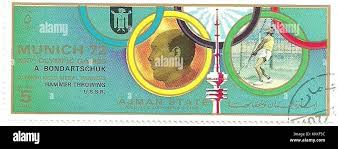 |
| PICRYL | 25 Soviet athlete Images: PICRYL - Public Domain Media Search Engine Public Domain Search |  |
| eBay | Ajman Stamps Depict Arab Masterpieces of the 13th Century on 7 Stamps Mint NH | eBay | 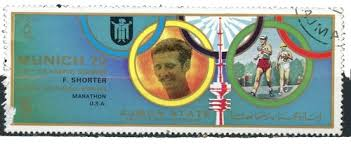 |
| Alamy | Nordwig hi-res stock photography and images - Alamy | 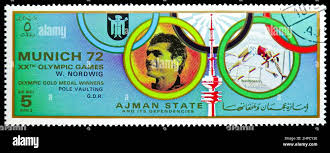 |
| Dreamstime | Hannay Stock Photos - Free & Royalty-Free Stock Photos from Dreamstime | 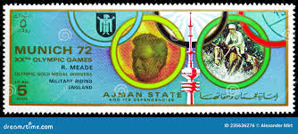 |
| Alamy | Wolfgang nordwig hi-res stock photography and images - Alamy | 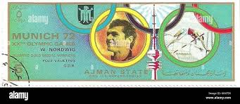 |
| Alamy | German athlete hi-res stock photography and images - Page 2 - Alamy | 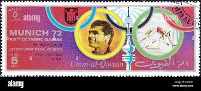 |
| Alamy | United arab emirates postage stamp hi-res stock photography and images - Alamy | 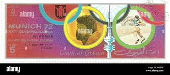 |
| Shutterstock | Ajman Uae: Over 3,171 Royalty-Free Licensable Stock Photos | Shutterstock | 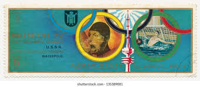 |
| Alamy | Pole vault wolfgang nordwig hi-res stock photography and images - Alamy | 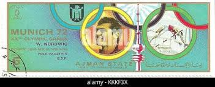 |
| Dreamstime.com | Renate Stecher 1950, GDR, Summer Olympic Games 1972 - Munich Medals Serie, Circa 1972 Editorial Stock Photo - Image of people, sport: 235637798 | 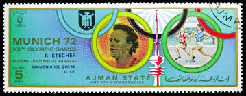 |
| Alamy | Klaus wolfermann hi-res stock photography and images - Alamy |  |
| Alamy | 1972 equestrian richard meade hi-res stock photography and images - Alamy | 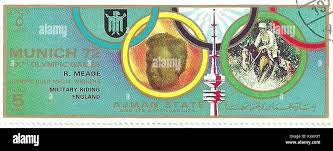 |
| Alamy | Ludvik danek hi-res stock photography and images - Alamy |  |
| Alamy | Rod milburn hi-res stock photography and images - Alamy | 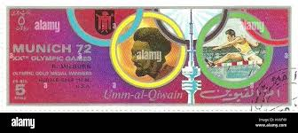 |
| Alamy | Antonella ragno lonzi hi-res stock photography and images - Alamy | 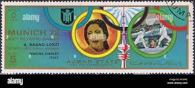 |
| Shutterstock | 11,414 Emirate Using Royalty-Free Images, Stock Photos & Pictures | Shutterstock |  |
| What are the prices of the three stamps? |  | |
| Alamy | Games olympic boxing munich hi-res stock photography and images - Alamy | 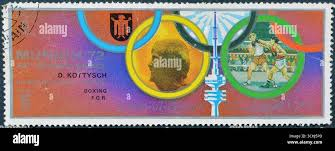 |
| Alamy | Nadezhda chizhova hi-res stock photography and images - Alamy |  |
| Shutterstock | 16+ Thousand Vintage Olympic Royalty-Free Images, Stock Photos & Pictures | Shutterstock |  |
| eBay | Stamps Ajman Progressive Proofs | eBay | 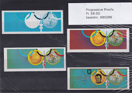 |
| Dreamstime.com | Gymnastics, Summer Olympic Games 1960 - Rome, Serie, Circa 1960 Editorial Stock Image - Image of philatelic, post: 223496879 | 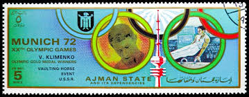 |
| Shutterstock | 1+ Thousand November 1945 Royalty-Free Images, Stock Photos & Pictures | Shutterstock | 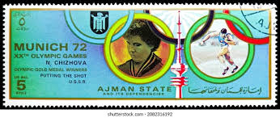 |
| HipStamp | Browse Listings in Middle East > United Arab Emirates / HipStamp | 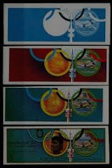 |
| Bob Shop | Looking for olympics+ps3 Buy online on Bob Shop. | 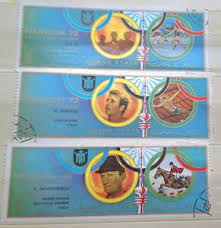 |
| Banknotecoinstamp | Sri Lanka Stamps – Page 3 – Banknotecoinstamp | 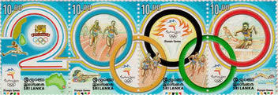 |
| HipStamp | Ajman Olympic Stamp:1972 Summer Olympic Munich'72-Cto-Stamp SET Very Fine | Middle East - Saudi Arabia, Stamp / HipStamp | 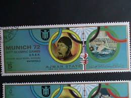 |
| PicClick UK | UMM AL QIWAIN Winter Olympics 1968 Stamps Sheet Mint Never Hinged Stamps R46236 £8.24 - PicClick UK | 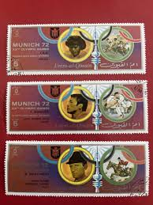 |
| eBay | Olympics Australian First Day Covers for sale | eBay | 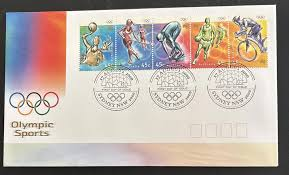 |
| armenianstamps.com | font 1-187a>187-9 Sydney 2000 Summer Olympic Games. Scott #613-5 View the image, Armenian Stamps | 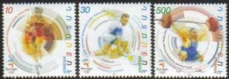 |
| eBay | umm-al-qiwain munich 72 set 15 sheets used cod.fra.682 | eBay | 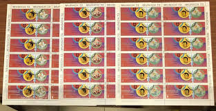 |
| eBay | AJMAN 1969 OLYMPICS, Cpl XF Perf+Imperf MNH** Sheets, Cycling Race, Ancient Game | eBay | 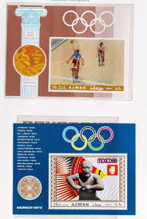 |
| eBay | Olympics Sri Lankan Stamps for sale | eBay | 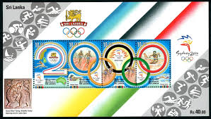 |
| eBay | Hong Kong 1996 FDC Atlanta Olympic Games stamps | eBay | 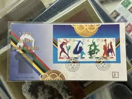 |
{kind=link}
{kind=link}
{kind=link}
{kind=link}
{kind=link}
{kind=link}